財務会計 FI（Financial Accounting）
財務会計 · 組織構造 · 勘定マスタ · 売掛金・買掛金 · 財務諸表
1. 本モジュールのガイド
FI のメインラインは「まず組織構造を構築し、次に勘定を登録し、最後に伝票とレポートを実行する」です：組織構造（会社コード / 勘定科目表 / 会計年度バリアント / 与信管理領域）→ グローバルパラメータ → 勘定グループと項目ステータスバリアント → 勘定マスタ（貸借対照表勘定、調整勘定の売掛金・買掛金、材料購買 GR/IR、損益）→ 伝票番号範囲と転記期間 → 転記の許容範囲グループ → 総勘定元帳伝票と残高 → 得意先／仕入先の勘定グループ、番号範囲とマスタデータ → 売掛金・買掛金（得意先請求書 / 入金 / 仕入先請求書 / 支払 / 残高）→ 財務諸表の構造（貸借対照表と損益計算書）とレポート実行。
本サイトでは原教材ドキュメントの順序どおり 45 のタスクを保持し、各タスクに IMG パス、T-code（ドキュメントに登場するもの）と原教材ドキュメントの実機画面を掲載しています。教材のシナリオは「頤寧機械有限公司」がゼロから会社コード C999 を構築し、貸借対照表と損益計算書を出力できるところまで進めるというものです。
- 組織構造の 4 点セット：会社コード / 勘定科目表 / 会計年度バリアント / 与信管理領域
- 勘定マスタ：
FS00で一般貸借対照表勘定、調整勘定（売掛／買掛）、材料購買勘定（GR/IR）、損益勘定を登録 - 転記期間と伝票番号範囲：期間のオープン／クローズの仕組み（クローズした期間では伝票を変更できない）
- 売掛金・買掛金のクローズドループ：得意先請求書
FB70、入金、仕入先請求書FB60、支払、残高照会（FD10N/FK10N）
ドキュメントに出てくる T-code：FS00 FB50 FB03 FS10N FD01 FK01 FB70 FD10N FB60 FK10N（詳細は T-code / IMG パス早見表 を参照）
2. タスク目次（45 件）
そのうち 34 件のタスクで、原教材ドキュメントの IMG 設定メニューパスが示されています；IMG 設定 のマークが付いているのはカスタマイジング（設定）タスク、業務処理 と付いているのは日常業務の操作タスクです。表示がないタスクは原文でも明示されておらず、タスク名からご自身で判断してください（一般に「～の定義／～パラメータのメンテナンス」＝ IMG 設定、「伝票・指図・請求書の登録／入力／照会」＝業務処理）。
3. 手順（タスクごと）
会社コードを登録する
2 画面 / 2 ステップ原語（中国語）
企业结构 → 定义 → 财务会计 → 编辑/复制/删除/检查公司代码、编辑公司代码数据选择编辑公司代码数据| 項目（日本語） | 画面の中国語 | 教材の設定値 |
|---|---|---|
| 会社コード | 公司代码 | C999 |
| 通貨 | 货币 | RMB |
| 言語 | 语言 | ZH |
-
解説： ここで 1 社の会社を登録し、登録したこの会社の業務を展開していきます。登録する会社は頤寧機械有限公司です。
会社コードは 1 つの完全な会計実体を表します。貸借対照表などがあります原文
解释：我们现在创建一家公司，并展开创建的此家公司的业务，我们创建的此家公司为颐宁机械有限公司。
公司代码描述的是一个完整的会计实体.有资产负债表等
画面 6image7.png · 394×363 教材ノート国 CN -
会社名 頤寧機械有限公司 都市 上海
上記の会社情報を下図のとおりに入力し、入力が完了したら「保存」ボタンをクリックします原文
公司名称 颐宁机械有限公司城市 上海
输入上述公司信息，如下图所示，输入完毕点击保存按钮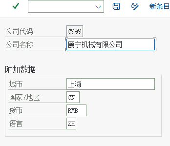
画面 7image9.png · 348×299
勘定科目表を登録する
2 画面 / 2 ステップ原語（中国語）
财务会计新 → 总帐会计新 → 总帐科目 → 主数据 → 总账科目-准备 → 编辑科目表清单按下图进行创建，创建完毕后点击保存按钮| 項目（日本語） | 画面の中国語 | 教材の設定値 |
|---|---|---|
| 総勘定元帳勘定番号の長さ | 总帐科目号长度 | 8 |
-
解説： 勘定科目表の登録は、会計関連の設定で最も基礎となる作業です。異なる会社コードを異なる勘定科目表に割り当てることができ、関係は多対一です。パスは下図のとおりで、最初から設定を行います。
原文
解释：创建会计科目表是进行会计部分设置最基础的工作，不同的公司代码可以分配给不同的会计科目表,关系是多对一，路径如下图，我们从头开始设置。
画面 8image10.png · 351×412 -
財務会計（新）－総勘定元帳会計（新）－総勘定元帳勘定－マスタデータ－総勘定元帳勘定-準備－勘定科目表一覧の編集 下図のとおり登録し、登録後に「保存」ボタンをクリックします
原文
财务会计新－总帐会计新－总帐科目－主数据－总账科目-准备－编辑科目表清单按下图进行创建，创建完毕后点击保存按钮
画面 9image11.png · 600×443 教材ノート勘定科目表 A999原理の説明説明 頤寧機械有限公司 勘定科目表 メンテナンス言語教材ノート管理会計統合 原価要素の自動登録
会計年度バリアントを定義
2 画面 / 2 ステップ原語（中国語）
财务会计 → 财务会计的全局设置 → 会计年度 → 分类账 → 会计年度和过账期间 → 维护会计年度变式（维护缩短的会计年度）点击新建按钮新条目-
解説： 会計年度バリアントは以降の財務処理で使用されます。会計年度バリアントは転記期間と特別期間の数を示し、つまりどの期間で転記するかを表します。
原文
解释：会计年度变式将用于后续的财务操作，会计年度变式表明过账期间和特殊期间的数目，即在哪些期间进行过账
画面 10image12.png · 452×396 -
財務会計－財務会計のグローバル設定－会計年度－元帳－会計年度と転記期間－会計年度バリアントのメンテナンス（短縮会計年度のメンテナンス）「新規エントリ」ボタンをクリック
原文
财务会计－财务会计的全局设置－会计年度－分类账－会计年度和过账期间－维护会计年度变式（维护缩短的会计年度）点击新建按钮新条目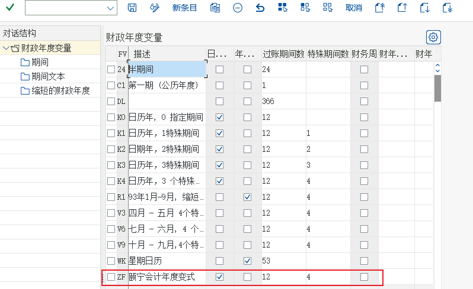
画面 11image13.png · 798×489
与信管理領域を登録
2 画面 / 2 ステップ原語（中国語）
企业结构 → 定义 → 财务会计 → 定义信贷控制范围创建如下信息：-
解説： 与信管理領域は、信用管理を行う際に信用がどの範囲で有効になるかを管理するために使用します。これは SAP の販売管理と売掛金モジュールで信用リスクを管理するための組織構造です。会社コードと与信管理領域は多対一の関係です。
原文
解释：信贷范围用于管理在进行信用控制时，信用在哪个范围内起作用。它是 SAP 销售和应收帐款模块中用于控制信用风险的组织结构.公司代码和信贷控制范围是多对一关系。
画面 12image14.png · 398×439 -
前の画面に続けて操作します（画面 13）

画面 13image15.png · 450×334 教材ノートC999 頤寧与信管理領域教材ノートRMB
会社コードのグローバルパラメータをメンテナンスする
2 画面 / 2 ステップ原語（中国語）
财务会计 → 财务会计的全局设置 → 公司代码 → 输入全局参数-
解説： 会社コードのグローバルパラメータは、会社の勘定科目表、与信管理領域、会計年度バリアントなどを設定するために使用します。主に会社コードのグローバルパラメータを入力し、上記の 3 つの組織構造を会社コードに割り当てます。
原文
解释：公司代码全局参数用于设置创建公司的帐目表，信贷控制范围，会计年度变式等。主要输入公司代码的全局参数,把上面的三个组织结构分配给公司代码。
画面 14image16.png · 352×360 -
財務会計－財務会計のグローバル設定－会社コード－グローバルパラメータの入力
原文
财务会计－财务会计的全局设置－公司代码－输入全局参数
画面 15image17.png · 608×656 教材ノート勘定科目表 A999 会社教材ノート国テーブル／勘定財務管理範囲教材ノート与信管理領域 C999 会計年度バリアント ZF
勘定グループと入力制御を定義
9 画面 / 9 ステップダブルクリックして勘定科目表 A999 グループ BSA に進みます
貸借対照表勘定
A999 BSA 貸借対照表勘定 10000000 39999999
A999 PLA 損益勘定 40000000 59999999
原語（中国語）
双击进入会计科目表 A999 组 BSA
资产负债类科目
A999 BSA 资产负债类科目 10000000 39999999
A999 PLA 损益类科目 40000000 59999999
财务会计 → 总帐会计 → 总帐科目 → 主数据 → 准备 → 定义科目组-
解説： 勘定グループの登録と入力制御、すなわち勘定を入力する際にどの項目が入力可能で、どの項目が非表示になるかなどに使用します。勘定グループは性質の似た勘定を分類するもので、主に業務処理で勘定マスタをメンテナンスします。（調整勘定--項目ステータスグループ--伝票入力）。
原文
解释：用于创建科目组，并进行输入控制，即在输入科目时，哪些字段允许输入，哪些字段隐藏等。科目组是将性质类似的科目分类，主要维护前台会计科目主数据。(统驭科目--字 段状态组--凭证输入)。
画面 16image18.png · 429×494 -
財務会計－総勘定元帳会計－総勘定元帳勘定－マスタデータ－準備－勘定グループの定義
原文
财务会计－总帐会计－总帐科目－主数据－准备－定义科目组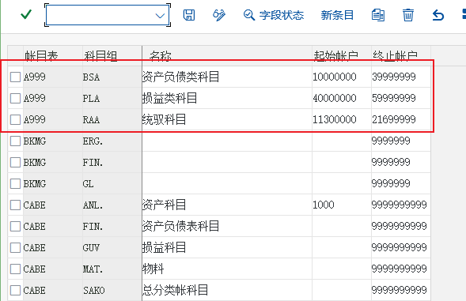
画面 17image19.png · 589×381 -
A999 RAA 調整勘定 11300000 21699999
BSA をダブルクリックして進む原文
A999 RAA 统驭科目 11300000 21699999
双击 BSA 进入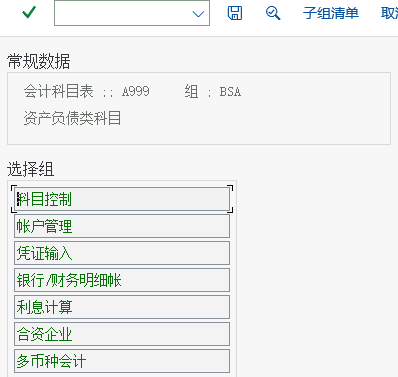
画面 18image20.png · 398×377 -
「勘定制御」をダブルクリック
原文
双击科目控制
画面 19image21.png · 558×459 -
「伝票入力」をダブルクリック
原文
双击凭证输入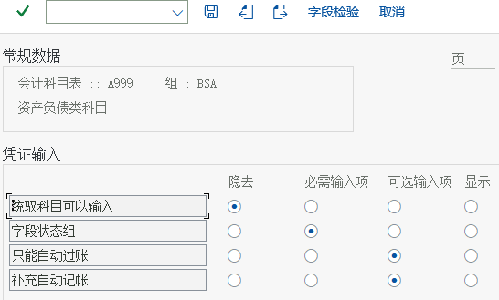
画面 20image22.png · 546×329 -
ダブルクリックして PLA へ進む
原文
双击进入 PLA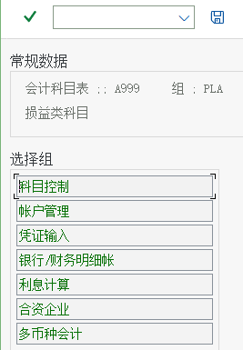
画面 21image23.png · 267×385 -
勘定管理へ進む
原文
进入账户管理
画面 22image24.png · 559×364 -
前の画面に続けて操作します（画面 23）

画面 23image25.png · 603×345 -
調整勘定へ進む
原文
进入统驭科目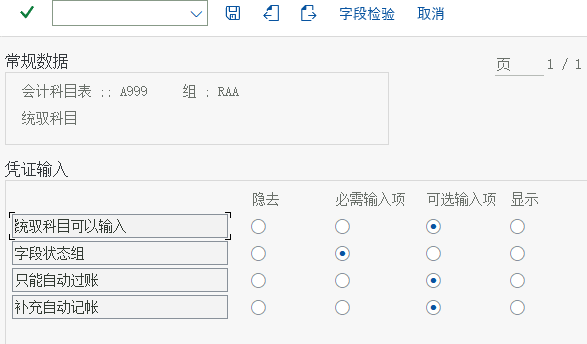
画面 24image26.png · 587×344
項目ステータスバリアントを定義
19 画面 / 10 ステップ次のグループを新規作成
原語（中国語）
新建如下组
财务会计(新) → 财务会计全局设置(新) → 字段 → 定义字段状态变式-
解説： 項目ステータスバリアントは会社コードに割り当てる重要なパラメータで、項目ステータスバリアントには多くの項目ステータスグループが列挙されています。項目ステータスグループは勘定科目の重要なパラメータであり、会計記帳伝票を入力する際に、その勘定のどの補助的な勘定割当項目が入力必須で、どれが入力不可で、どれが選択可能かを制御します。
原文
解释：字段状态变式是分配给公司代码的一项重要参数,在字段状态变式中罗列了很多字段状态组,而字段状态组是会计科目中的一个重要参数.它控制在输入一张会计记帐凭证时,该科目的那些辅助核算项目是必须输入的,哪些是不允许输入的,哪些是可以选择的
画面 25image27.png · 597×479 -
重要：勘定グループは勘定を制御するパラメータ、項目ステータスグループは伝票を制御する補助的な勘定項目です
原文
重点:科目组是控制科目中的参数,字段状态组是控制凭证中的辅助核算项
画面 26image28.png · 363×452 -
財務会計（新）－財務会計のグローバル設定（新） — 項目－項目ステータスバリアントの定義
原文
财务会计(新)－财务会计全局设置(新) — 字段－定义字段状态变式
画面 27image29.png · 447×123 -
Z001 会社コード C999 項目ステータスグループ
原文
Z001 公司代码 C999 字段状态组
画面 28image30.png · 445×125 
画面 29image31.png · 565×147 -
項目ステータスグループをダブルクリック
原文
双击字段状态组
画面 30image32.png · 577×265 -
ZEXP 費用勘定
ZGBS 一般貸借対照表勘定 ZMMA 材料購買勘定（GR/IR） ZRAA 調整勘定-売掛／買掛 ZREV 収益勘定原文
ZEXP 费用科目
ZGBS 一般资产负债科目 ZMMA 材料采购科目（GR/IR） ZRAA 统驭科目-应收/应付 ZREV 收入科目
画面 31image33.png · 274×408 
画面 32image34.png · 481×542 教材ノートZGBS をダブルクリック -
前の画面に続けて操作します（画面 33）
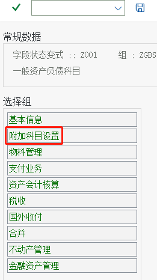
画面 33image35.png · 261×466 
画面 34image36.png · 512×866 -
ZMMA をダブルクリック
原文
双击ZMMA
画面 35image37.png · 253×472 
画面 36image38.png · 510×405 
画面 37image41.png · 522×862 
画面 38image42.png · 521×427 画面 37image41.png · 522×862 画面 38image42.png · 521×427 -
システムが「項目ステータスが一致しません。ヘルプテキストを参照してください」とメッセージを表示します。Enter を押すと戻ります
原文
系统会提示“不一致的字段状态，参加帮助文本”回车即可返回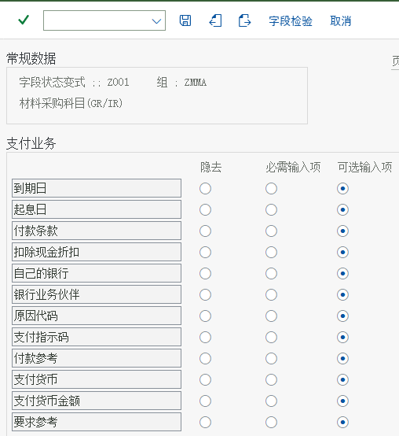
画面 41image43.png · 508×554 -
ZREV をダブルクリック
原文
双击 ZREV
画面 42image44.png · 362×466 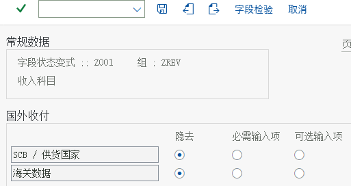
画面 43image45.png · 513×272
項目ステータスバリアントに会社コードを配賦
2 画面 / 2 ステップ原語（中国語）
财务会计 → 财务会计全局设置 → 凭证 → 行项目 → 控制 → 向字段状态变式分配公司代码-
解説： まず会社コードに配賦し、後で項目情報を勘定科目に配賦できます
原文
解释:先分配给公司代码,以后可以把字段信息分配给会计科目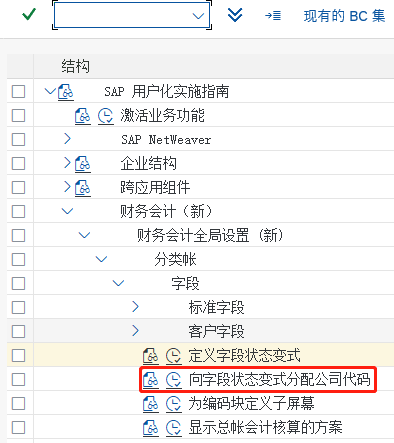
画面 44image46.png · 394×443 -
前の画面に続けて操作します（画面 45）
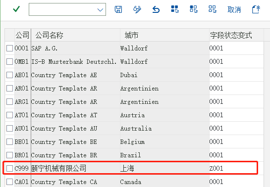
画面 45image47.png · 545×378
留保利益勘定を定義
7 画面 / 2 ステップ原語（中国語）
财务会计(新) → 总帐会计(新) → 主数据 → 总帐科目 → 准备 → 定义留存收益科目-
財務会計（新）－総勘定元帳会計（新）－マスタデータ－総勘定元帳勘定－準備－留保利益勘定の定義
原文
财务会计(新)－总帐会计(新)－主数据－总帐科目－准备－定义留存收益科目
画面 46image48.png · 389×514 -
X 410901X 410901
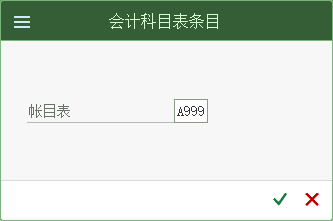
画面 47image52.png · 333×221 
画面 48image53.png · 394×257 
画面 49image54.png · 324×40 画面 47image52.png · 333×221 画面 48image53.png · 394×257 画面 49image54.png · 324×40 教材ノートシステムが「… 未登録」とメッセージを表示しますが、そのまま Enter で通過できます
一般的な貸借対照表勘定を新規作成
FS002 画面 / 2 ステップ「新規勘定」ボタン（テンプレート付きボタンの隣のボタン）をクリック 勘定科目表: A999 = 頤寧機械有限公司会計科目表 総勘定元帳勘定番号 勘定名称
10010101 現金
10020101 銀行預金－工商銀行上海支店南京西路支店
10020111 銀行預金－中国銀行上海支店淮海中路支店 3101968
12110101 棚卸資産－原材料（ROH）
12310101 棚卸資産－商品（HAWA）
12430101 棚卸資産－完成品（FERT）
原語（中国語）
点击新建科目按钮（带模板按钮边上那个按钮）帐目表: A999 = 颐宁机械有限公司会计科目表总帐帐号 科目名称
10010101 现金
10020101 银行存款－工商银行上海分行南京西路支行
10020111 银行存款－中国银行上海分行淮海中路支行 3101968
12110101 存货－原材料
12310101 存货－贸易商品
12430101 存货－产成品
21710102 未交税金 → 增值税 → 销项税额-
トランザクションコード：FS00
原文
事务代码：FS00
画面 53image55.png · 331×458 -
前の画面に続けて操作します（画面 54）
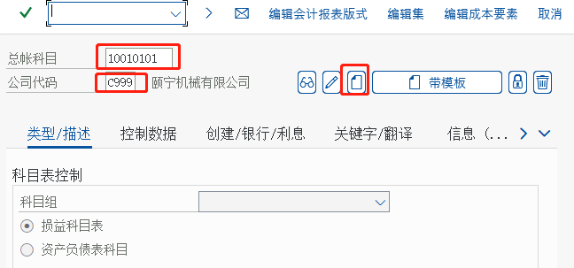
画面 54image56.png · 648×303 教材ノート31410101 利益処分－未処分利益教材ノート31010101 払込資本
調整勘定－売掛金／買掛金を新規作成
FS0010 画面 / 3 ステップ解説：これもいくつかの総勘定元帳勘定を登録するものです。異なるのは、これらの勘定、たとえば売掛金・買掛金には対応する明細元帳モジュールがあることです。たとえば得意先勘定、仕入先勘定です。業務の記帳はこれらの明細元帳にのみ行うことができ、統合によって総勘定元帳が自動的に更新され、総勘定元帳に直接記帳することはできません。これにより、明細元帳と総勘定元帳が一致しない事態の発生を防ぎます。これらの総勘定元帳勘定が調整勘定となります。
原語（中国語）
解释：这也是创建一些总账会计科目。不同的是这些科目，如应收帐和应付账款会有相应的明细分类账模块。如客户账户，供应商账户。业务入账只能记入这些明细分类账中，通过集成自动更新总账，而不能直接记入总账。这样杜绝了明细分类账和总账不付的情况发生。这些总账科目就为统驭科目。
| 項目（日本語） | 画面の中国語 | 教材の設定値 |
|---|---|---|
| トランザクションコード | 事务代码 | FS00 |
-
その他の総勘定元帳勘定の登録は、現金の総勘定元帳勘定の登録と同様です
原文
其他总账科目创建如现金总账的创建
画面 55image57.png · 639×515 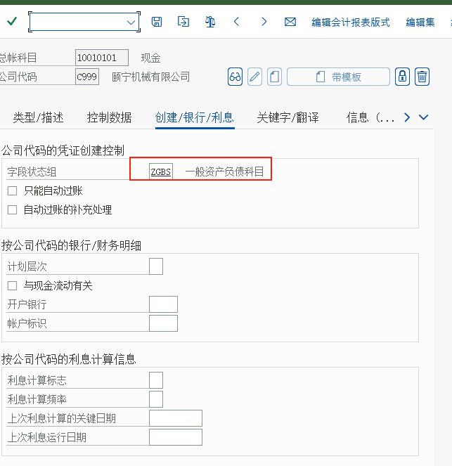
画面 56image58.png · 643×663 -
売掛金 FS00 11310101 を登録
原文
创建应收账款 FS00 11310101
画面 57image59.png · 623×786 
画面 58image60.png · 652×672 
画面 59image61.png · 635×516 -
買掛金勘定を登録
21210101 買掛金原文
创建应付科目
21210101 应付帐款
画面 60image64.png · 626×520 
画面 61image65.png · 656×678 
画面 62image66.png · 664×779 画面 60image64.png · 626×520 画面 61image65.png · 656×678
材料購買勘定を新規登録する
FS003 画面 / 1 ステップ原語（中国語）
| 項目（日本語） | 画面の中国語 | 教材の設定値 |
|---|---|---|
| トランザクションコード | 事务代码 | FS00 |
-
解説: 材料購買勘定も総勘定元帳の勘定を 1 つ登録します。この勘定は「一件ごとに消し込む」中間的なつなぎ勘定、すなわち材料購買勘定である必要があります。GR/IR（入庫／請求書）とも呼ばれます。入庫時にはシステムが会計伝票を自動生成します。借方：在庫、貸方：材料購買。請求書受領時にもシステムが会計伝票を自動生成します。借方：材料購買、貸方：買掛金。両側の「材料購買」伝票行が相互に一致する処理を「消込」と呼び、一致したものを「消込済項目」、一致しないものを「未消込項目」と呼びます。未消込項目は、品物または請求書のいずれか一方が未着であることを示します。これはリスクポイントです。「消込」で管理する必要がある他の勘定の多くは、銀行未達勘定のような中間的なつなぎ勘定です。あるいは債権債務を表す（ただし買掛金・売掛金モジュールでは管理しない）勘定で、たとえば長期借入金です。得意先と仕入先の明細勘定は、この消込によって管理されています。
材料購買－GR/IR 勘定を登録原文
解释:材料采购科目也是创建一个总账会计科目。这个科目需要"逐笔逐清"的中间过渡科目--材料采购科目。也叫 GR/IR(收货/收发票)。在收货时系统自动生成会计凭证。借:库存 贷:材料采购.而收发票时，系统也自动生成会计凭证。 借:材料采购，贷:应付账款.两边的"材料采购" 凭证行相互匹配的过程叫"清账"，对上的叫"已清项"，对不上的叫"未清项"，未清项反映了货或者发票有一方未到。这是个风险点，其他需要用"清账"来管理的科目大多是一些中间过渡科目，如银行未达科目。或者是反映债权债务(但又不用应付应收模块管理)科目，如长期借款。客户和供应商明细账就是采用清账来管理的。
创建材料采购－GR/IR 科目


損益勘定を新規登録する
FS0072 画面 / 36 ステップ解説：損益勘定の特徴は、年次決算の際に損益勘定の年末残高が「未分配利益」に繰り越されることです
"（または本年利益）勘定の年初残高。一方、それら自身の年初残高は 0 にクリアされます。
損益勘定を登録
原語（中国語）
解释：损益类科目的特点是在做年结的时候，损益类科目的年末余额会结转到"未分配利润
"(或者本年利润)科目的年初余额。而他们自己的年初余额清为 0。
创建损益科目
| 項目（日本語） | 画面の中国語 | 教材の設定値 |
|---|---|---|
| トランザクションコード | 事务代码 | FS00 |
-
51010101 売上高-自製製品
原文
51010101 主营业务收入-自制产品
画面 68image73.png · 620×507 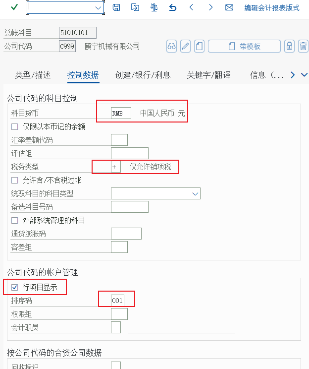
画面 69image74.png · 624×744 
画面 70image75.png · 625×673 画面 68image73.png · 620×507 画面 69image74.png · 624×744 画面 70image75.png · 625×673 -

画面 74image78.png · 618×495 
画面 75image79.png · 477×753 画面 74image78.png · 618×495 画面 75image79.png · 477×753 -
製造原価－原材料消費を登録
41010101原文
创建生产成本－原材料消耗
41010101
画面 78image80.png · 630×623 -
製造原価－製造指図差異 41010901 を登録
原文
创建生产成本－订单差异 41010901
画面 79image84.png · 609×677 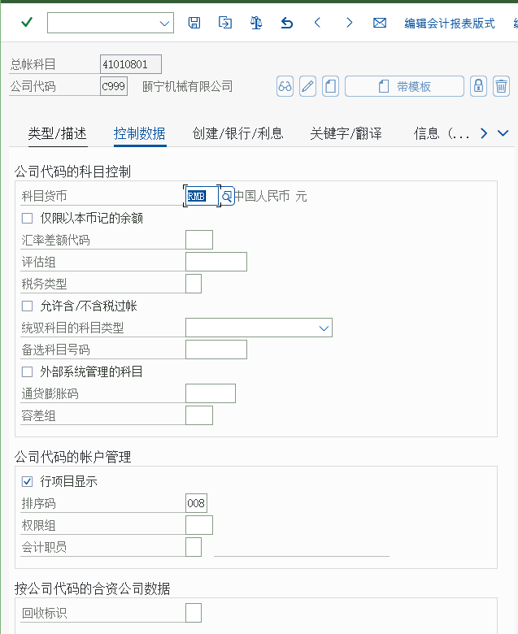
画面 80image85.png · 637×780 
画面 81image86.png · 614×508 画面 79image84.png · 609×677 画面 80image85.png · 637×780 画面 81image86.png · 614×508 -
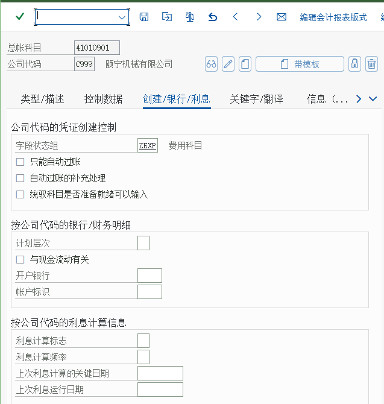
画面 85image90.png · 637×670 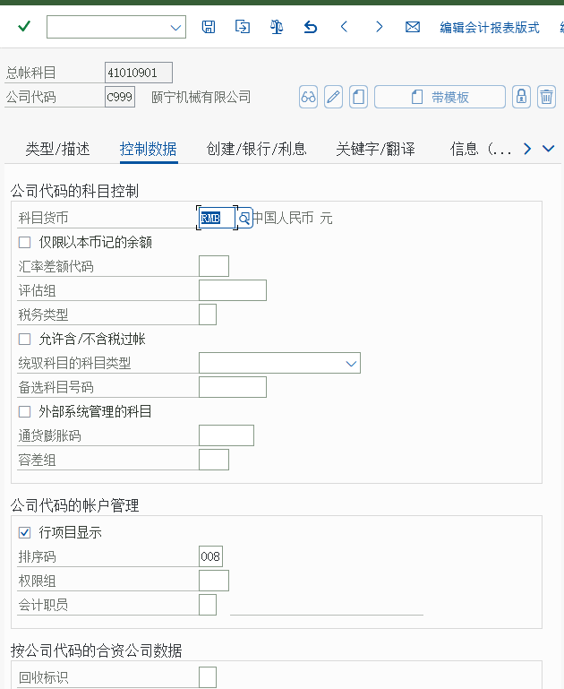
画面 86image91.png · 630×769 
画面 87image92.png · 612×497 画面 85image90.png · 637×670 画面 86image91.png · 630×769 画面 87image92.png · 612×497 -
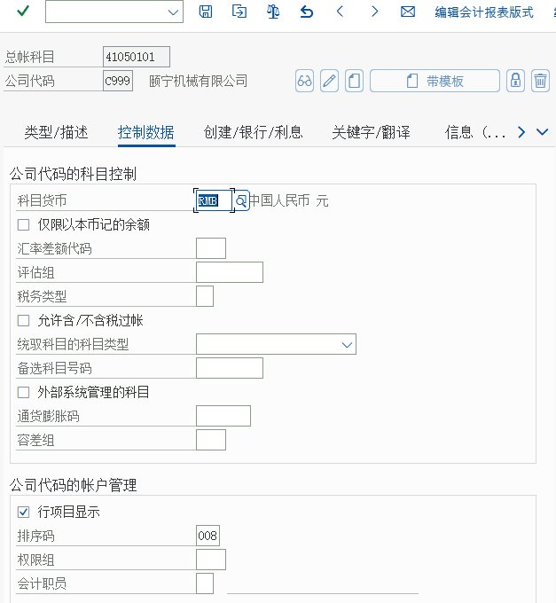
画面 91image93.png · 627×680 
画面 92image94.png · 632×438 -
製造間接費－賃金 41050101 を登録
原文
创建制造费用－工资 41050101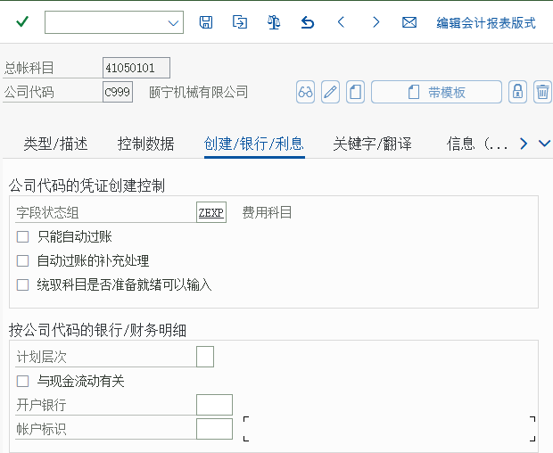
画面 93image95.png · 620×508 -
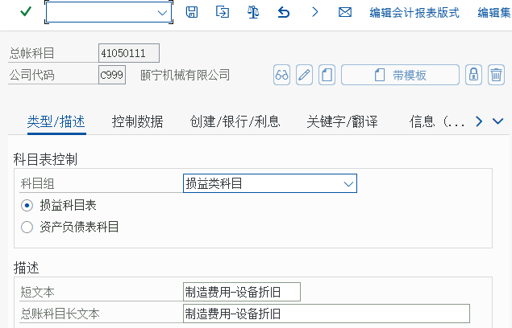
画面 94image96.png · 635×408 -
製造間接費－電気料金 41050121 を登録
原文
创建制造费用－电费 41050121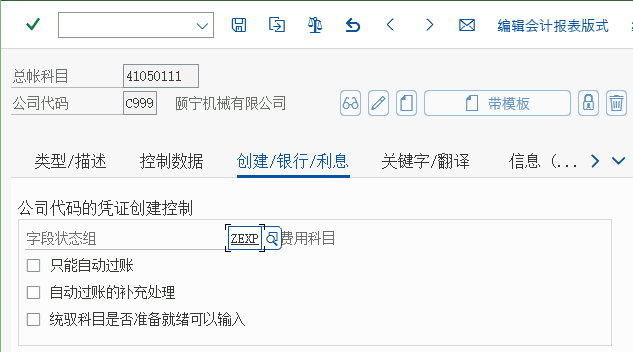
画面 95image99.png · 633×352 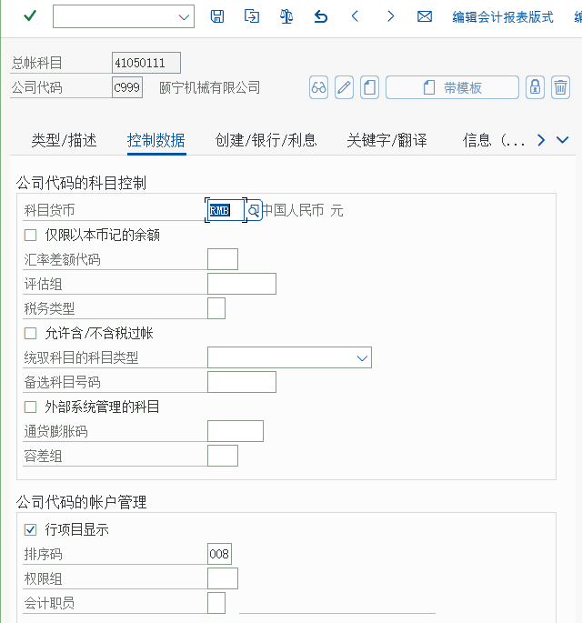
画面 96image100.png · 640×685 画面 95image99.png · 633×352 画面 96image100.png · 640×685 -

画面 99image101.png · 645×697 
画面 100image102.png · 631×413 -
売上高－商品（HAWA） 51010201 を登録
原文
创建主营业务收入－贸易商品 51010201
画面 101image103.png · 624×331 -
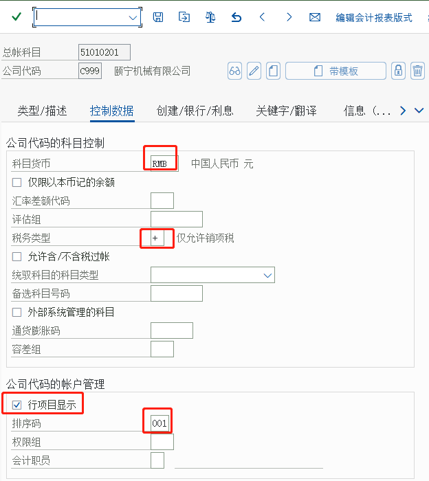
画面 102image104.png · 624×700 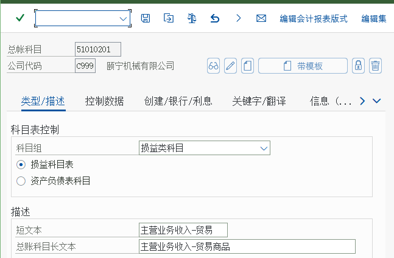
画面 103image105.png · 647×424 -
売上高－自製製品 54010101 を登録
原文
创建主营业务收入－自制产品 54010101
画面 104image106.png · 632×347 -

画面 105image107.png · 606×692 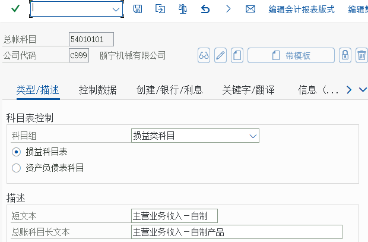
画面 106image108.png · 620×407 -
売上原価－商品（HAWA） 54010201 を登録
原文
创建主营业务成本－贸易商品 54010201
画面 107image109.png · 636×364 -

画面 108image110.png · 609×680 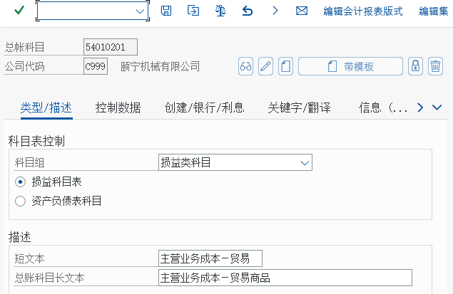
画面 109image111.png · 635×413 -
売上原価－購買価格差異 54010301 を登録
原文
创建主营成本－采购价差 54010301
画面 110image112.png · 636×338 -

画面 111image113.png · 649×627 
画面 112image114.png · 624×408 -
売上原価－製造指図差異 54010401 を登録
原文
创建主营业务成本－生产订单差异 54010401
画面 113image115.png · 635×349 -

画面 114image116.png · 595×637 
画面 115image117.png · 642×417 -
販売費－運賃 55010101 を登録
原文
创建销售费用－运费 55010101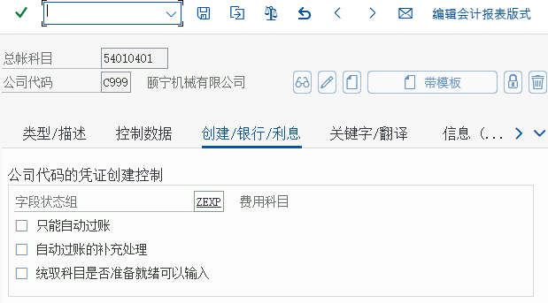
画面 116image118.png · 619×343 -

画面 117image119.png · 619×686 
画面 118image120.png · 652×421 -
販売費－市場費用 55010111 を登録
原文
创建销售费用－市场费用 55010111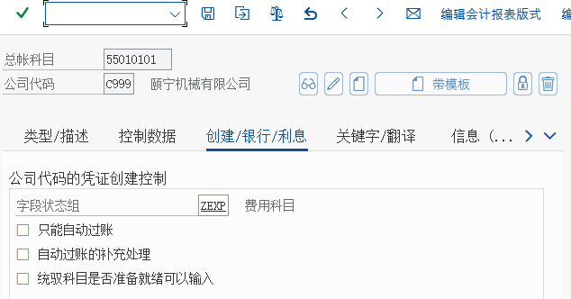
画面 119image121.png · 634×332 -

画面 120image122.png · 648×775 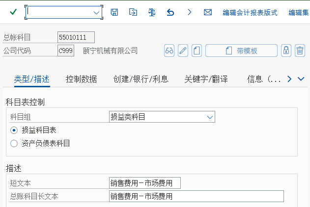
画面 121image123.png · 631×422 -
管理費－給与 55020101 を登録
原文
创建管理费用－工资 55020101
画面 122image124.png · 650×358 -
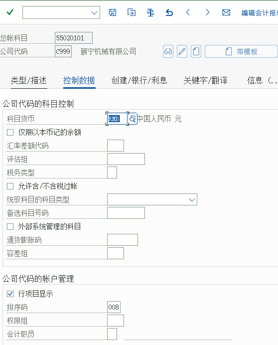
画面 123image125.png · 558×692 
画面 124image126.png · 621×407 -
管理費－減価償却費 55020111 を登録
原文
创建管理费用－折旧 55020111
画面 125image127.png · 627×341 -

画面 126image128.png · 650×631 
画面 127image129.png · 629×420 -
管理費－電話料金 55020121 を登録
原文
创建管理费用－电话费 55020121
画面 128image130.png · 641×336 -

画面 129image131.png · 631×628 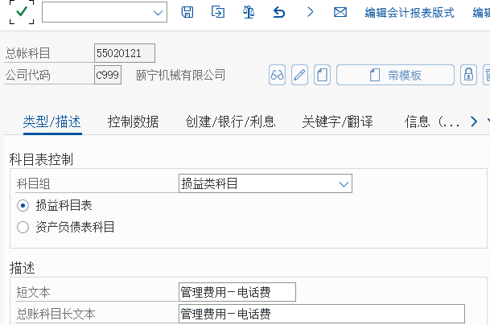
画面 130image132.png · 609×404 -
管理費－事務用品 55020131 を登録
原文
创建管理费用－办公用品 55020131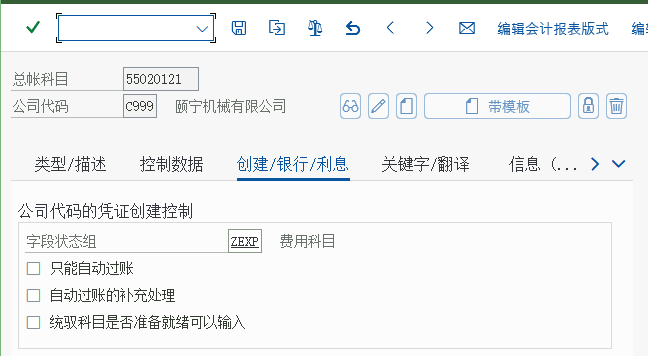
画面 131image133.png · 648×356 -

画面 132image134.png · 625×692 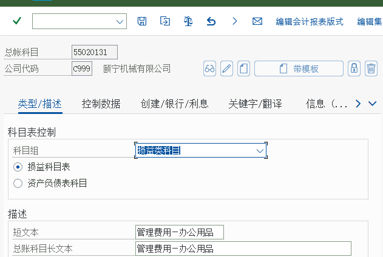
画面 133image135.png · 631×424 -
管理費－賃料 55020141 を登録
原文
创建管理费用－租金 55020141
画面 134image136.png · 601×330 -

画面 135image137.png · 609×625 
画面 136image138.png · 635×423 -
管理費－その他 55029101 を登録
原文
创建管理费用－其他 55029101
画面 137image139.png · 614×343 -
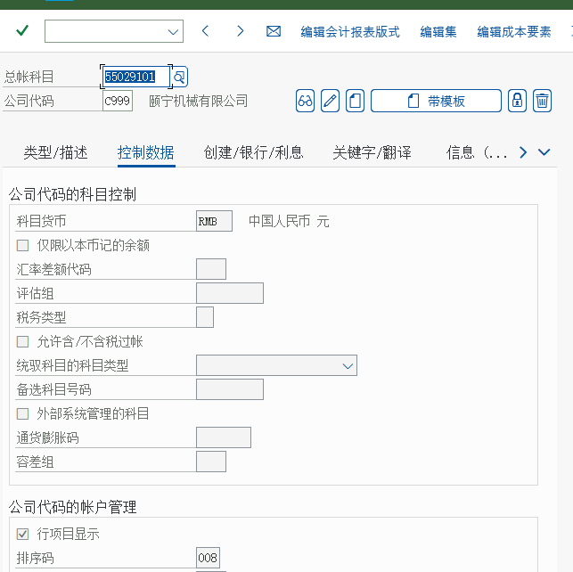
画面 138image140.png · 643×642 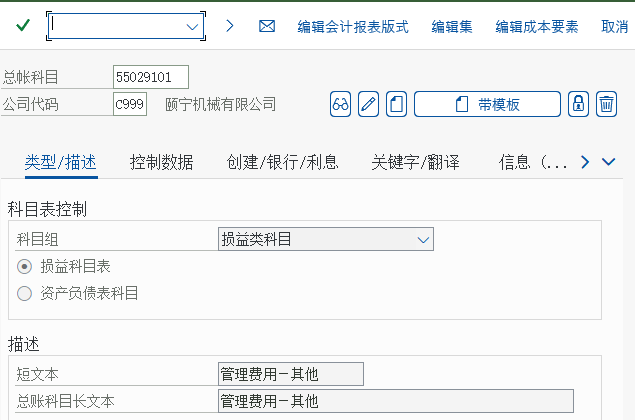
画面 139image141.png · 635×420
勘定集計を照会
1 画面 / 1 ステップ原語（中国語）
-
解説： 前述のステップで登録する勘定科目を作成します
原文
解释：创建上述步骤中创建的会计科目
画面 140image143.png · 752×661 教材ノートS_alr_87012326
伝票番号範囲を会社コードにコピー
5 画面 / 4 ステップ原語（中国語）
财务会计(新) → 财务会计全局设置(新) → 凭证 → 凭证号范围 → 复制到公司代码-
財務会計（新）－財務会計のグローバル設定（新）－伝票－伝票番号範囲－会社コードへのコピー
原文
财务会计(新)－财务会计全局设置(新)－凭证－凭证号范围－复制到公司代码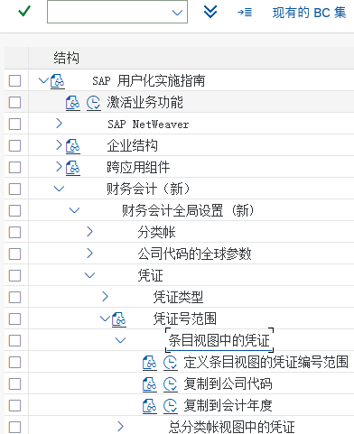
画面 141image144.png · 392×481 
画面 142image145.png · 599×562 -
解説： SAP では、伝票など番号を必要とする文書はすべて番号範囲で管理する必要があります。通常、番号範囲を設定した後、それぞれの使用範囲に割り当てることができます。
ソース会社(0001)とターゲット会社(C999)を入力原文
解释：SAP 中对于凭证等需号码的单据，均需要用号码范围来进行管理。通常号码范围设置好之后即可分配到各自使用的范围内。
输入源公司(0001)及目标公司(C999)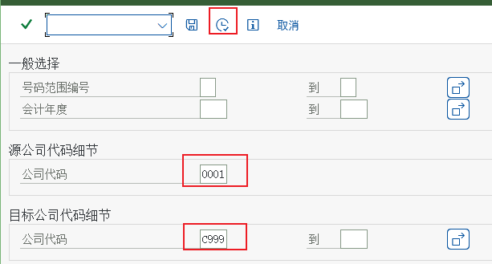
画面 143image146.png · 613×329 -
「はい」をクリック
原文
点击是
画面 144image147.png · 368×208 -
前の画面に続けて操作します（画面 145）

画面 145image148.png · 919×564
転記期間バリアントを定義
2 画面 / 1 ステップ原語（中国語）
财务会计(新) → 财务会计全局设置(新) → 分类账 → 会计年度和过账期间 → 过账期间-定义未清过账期间变式-
財務会計（新）－財務会計のグローバル設定（新）－元帳－会計年度と転記期間－転記期間-未消込転記期間バリアントの定義
原文
财务会计(新)－财务会计全局设置(新)－分类账－会计年度和过账期间－过账期间-定义未清过账期间变式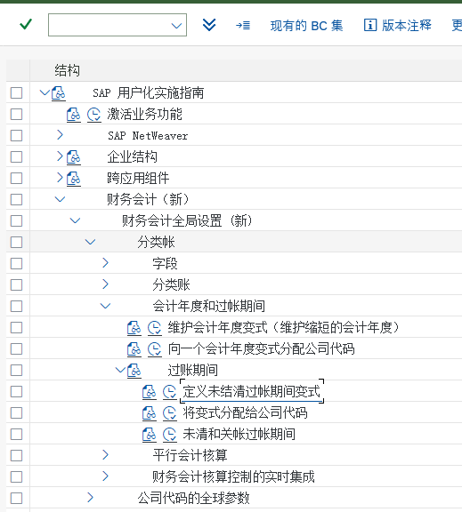
画面 146image149.png · 519×576 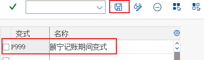
画面 147image150.png · 398×118 つまずき注意解説：これは伝票のオープン／クローズを制御するものです。クローズ済みの会計期間では伝票を変更できません。複数の会社コードの転記期間のオープンとクローズを一括で制御できます。まず、各会社コードに転記期間バリアントパラメータを割り当てます。教材ノートP999 頤寧転記期間バリアント
転記期間バリアントを会社コードに配賦します
2 画面 / 1 ステップ原語（中国語）
财务会计(新) → 财务会计全局设置(新) → 分类账 → 会计年度和过账期间 → 过账期间-将变式分配给公司代码-
前の画面に続けて操作します（画面 148）

画面 148image151.png · 513×485 
画面 149image152.png · 511×446 教材ノートP999
財務会計（新）－財務会計のグローバル設定（新）－元帳－会計年度と転記期間－転記期間-会社コードへのバリアント割当
転記期間を設定（業務処理）
4 画面 / 2 ステップ原語（中国語）
会计核算 → 财务会计 → 总帐 → 环境 → 当前设置 → 未清过帐期间和已结过帐期间-
解説： 期間のオープンとクローズを完了します。通常は月次決算の一環として行います。
会計－財務会計－総勘定元帳－環境－現行設定－未消込転記期間と締め済み転記期間原文
解释:完成开帐和关帐，通常作为月结的一个环节。
会计核算－财务会计－总帐－环境－当前设置－未清过帐期间和已结过帐期间
画面 150image153.png · 492×725 
画面 151image154.png · 361×194 -
P999 +/A/D/K/S 1-12 期間 2006 年 13－16 期間、+/A/D/K/S はそれぞれ次の意味を表します
原文
P999 +/A/D/K/S 1-12 期间 2006 年 13－16 期间，+/A/D/K/S 分别代表如下含义
画面 152image155.png · 171×266 
画面 153image156.png · 673×304
転記の許容範囲グループを定義
3 画面 / 2 ステップ解説：会計担当者が伝票を起票する際の制限を設定します。たとえば、1 件の伝票の金額がいくらを超えてはならないか、などです。
原語（中国語）
解释：设置对会计人员出凭证的一些限定,比如：单笔凭证的金额不能超过多少，
财务会计(新) → 财务会计的全局设置(新) → 凭证 → 容差组 → 定义雇员的容差组-
財務会計（新）－財務会計のグローバル設定（新）－伝票－許容範囲グループ－従業員の許容範囲グループの定義
原文
财务会计(新)－财务会计的全局设置(新)－凭证－容差组－定义雇员的容差组
画面 154image157.png · 344×577 
画面 155image158.png · 567×352 -
未消込項目（請求書など）1 件あたりの金額がいくらまでなら許容されるかを定義します。これらの条件は許容範囲グループに設定し、次に会計担当者に許容範囲グループを割り当てます
1 件コピー原文
单笔未清项(如发票)的金额不能超过多少。我们把这些条件设置在容差组里,再给会计人员分配容差组
复制一条
画面 156image159.png · 601×426
総勘定元帳勘定の伝票を入力
FB50FB034 画面 / 4 ステップ原語（中国語）
-
解説： 総勘定元帳で会計伝票を入力し、払込資本 2 800 000 を受け取り、工商銀行の口座に入金したことを記録します。トランザクションコード FB50
原文
解释:：在总帐中输入会计凭证，记录我们收到 2 800 000 的实收资本，存入工商银行账户。事务代码 FB50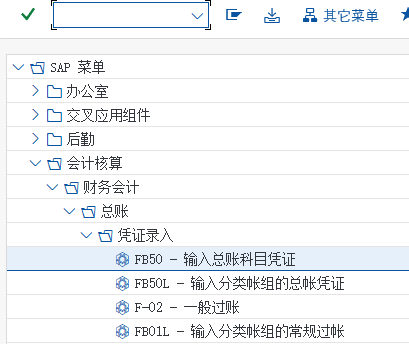
画面 157image160.png · 409×344 -
10020101 31010101
別の会社の伝票を入力する場合は、会社コードボタンをクリックします原文
10020101 31010101
输入不同公司的凭证可点击公司代码按钮
画面 158image161.png · 228×194 -
前の画面に続けて操作します（画面 159）

画面 159image162.png · 867×487 -
パークも可能ですし、直接保存して転記することもできます（下図は FB03 で照会した結果です）
原文
可预制，也可以直接保存后过账（下图为FB03查询得到的结果）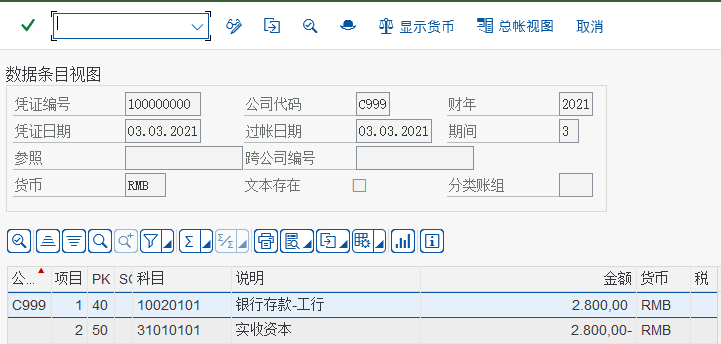
画面 160image163.png · 721×344
総勘定元帳勘定残高を照会
FS10N11 画面 / 7 ステップ原語（中国語）
后台 财务会计(新) → 财务会计的全局设置(新) → 销售/购置税 → 过帐 → 定义税务科目| 項目（日本語） | 画面の中国語 | 教材の設定値 |
|---|---|---|
| 仕入税を定義 | 定义进项税 | 21710101 |
-
トランザクションコード FS10N
原文
事务代码 FS10N
画面 161image164.png · 388×455 
画面 162image165.png · 614×180 -
前の画面に続けて操作します（画面 163）
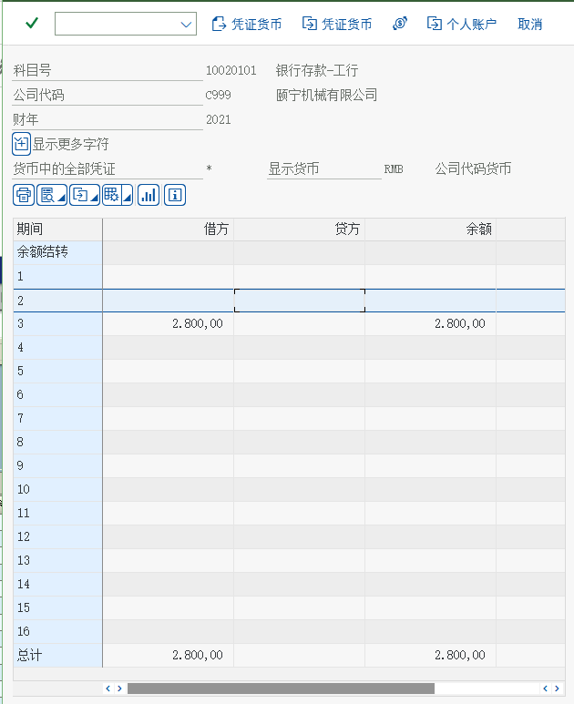
画面 163image166.png · 630×773 -
1、自動税転記をメンテナンス
原文
1、 维护自动税收过帐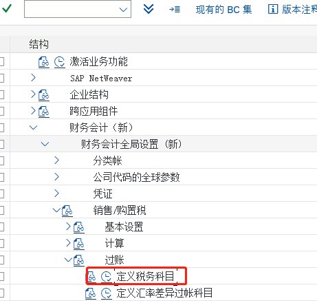
画面 164image167.png · 461×437 -
売上税を定義
原文
定义销项税
画面 165image168.png · 567×565 -
売上税をダブルクリックし、売上税を定義
原文
双击销项税，定义销项税
画面 166image169.png · 333×221 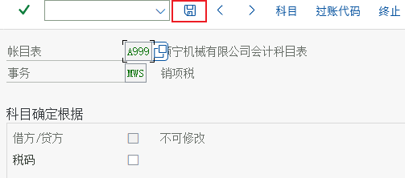
画面 167image170.png · 503×222 -
「保存」ボタンをクリックし、21710102 を入力します
原文
点击保存按钮，输入 21710102
画面 168image171.png · 514×243 -
前の画面に続けて操作します（画面 169）

画面 169image172.png · 596×417 
画面 170image173.png · 520×234 
画面 171image174.png · 552×224
売掛金・買掛金の許容範囲グループを定義
IMG設定（カスタマイズ）3 画面 / 2 ステップ原語（中国語）
财务会计(新) → 应收账目和应付账目 → 业务交易 → 对外支付 → 付款 → 手工对外支付 → 定义容差组-
解説： 得意先や仕入先との入出金業務に対しては、いくつかの管理条件を定義できます。たとえば、ある得意先区分の入金差異は 100 元を超えてはならない、請求書の 0.1% までなどです。許容範囲グループは、各得意先および仕入先に割り当てるマスタデータです。
財務会計（新）－売掛金・買掛金－業務取引－対外支払－支払－手動対外支払－許容範囲グループの定義原文
解释：对于和客户或供应商的收付业务，我们可以定义一些控制条件。比如对某类客户的收款差异不能超过 100 元，或发票的 0.1%等。容差组是分配给每个客户和供应商的主数据。
财务会计(新)－应收账目和应付账目－业务交易－对外支付－付款－手工对外支付－定义容差组
画面 172image175.png · 357×537 -
0001 のものをコピー
原文
复制 0001 的
画面 173image176.png · 511×164 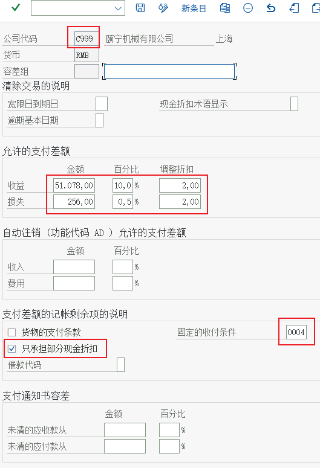
画面 174image177.png · 529×775
仕入先勘定グループを定義
IMG設定（カスタマイズ）11 画面 / 8 ステップ解説：仕入先は勘定グループ別に管理します。たとえば原材料の仕入先、商品の仕入先などです。仕入先マスタの情報は、一般データ、会社コードデータ、購買データの 3 つの階層に分かれます。
原語（中国語）
解释：供应商是按照账户组来管理的，如原料供应商，贸易产品供应商等。供应商主数据信息分三个层次：一般数据，公司代码数据和采购数据。
财务会计 → 应收账目和应付账目 → 供应商账号 → 主数据 → 供应商主数据创建准备 → 定义带有屏幕格式的账户组（供应商）-
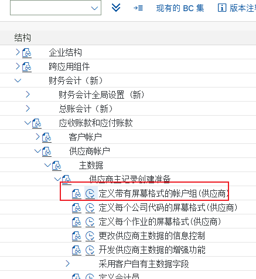
画面 175image180.png · 437×475 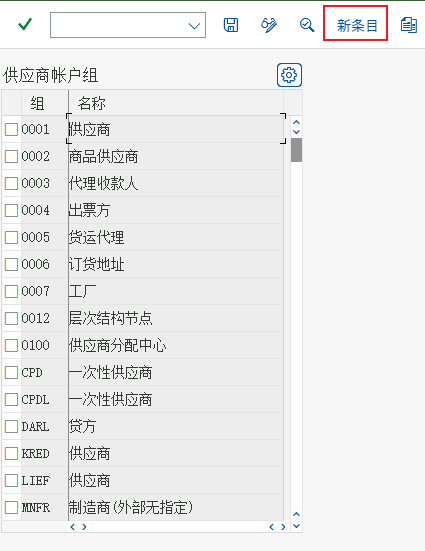
画面 176image181.png · 425×551 画面 175image180.png · 437×475 画面 176image181.png · 425×551 -
G001 グループ 原材料に対して、G002 グループ 商品（HAWA）仕入先、G003 グループ 費用仕入先を設定します
財務会計－売掛金・買掛金－仕入先勘定－マスタデータ－仕入先マスタ登録準備－画面フォーマット付きの勘定グループの定義（仕入先）原文
G001组 原材料，对其设置 G002组 贸易商品供应商 G003组 费用供应商
财务会计－应收账目和应付账目－供应商账号－主数据－供应商主数据创建准备－定义带有屏幕格式的账户组（供应商）
画面 179image182.png · 476×348 -
「基本データ」をダブルクリック
原文
双击基础数据画面 180image183.png · 417×358 -
「住所」をダブルクリック
原文
双击地址画面 181image184.png · 563×890 -
会社コードデータをダブルクリック
原文
双击公司代码数据
画面 182image185.png · 255×334 -
「勘定管理」をダブルクリック
原文
双击账户管理画面 183image186.png · 570×716 -
「支払取引」をダブルクリック
原文
双击支付交易
画面 184image187.png · 595×720 教材ノート同様に、他のグループも登録します（コピーで登録） -
G002 G003 をコピー
原文
拷贝 G002 G003
画面 185image188.png · 295×194
仕入先勘定の番号範囲を定義
IMG設定（カスタマイズ）6 画面 / 5 ステップ「インターバル」をクリックし、「インターバル＋」をクリックして 3 回クリックし、1 つずつメンテナンスします
Z1 10000000 19999999
原語（中国語）
点击间隔 点击间隔＋,点击三次，一次维护
Z1 10000000 19999999
财务会计 → 应收账目和应付账目 → 供应商账户 → 主数据 → 供应商主记录创建准备 → 创建供应商账户编号范围-
財務会計－売掛金・買掛金－仕入先勘定－マスタデータ－仕入先マスタ登録準備－仕入先勘定の番号範囲の登録
原文
财务会计－应收账目和应付账目－供应商账户－主数据－供应商主记录创建准备－创建供应商账户编号范围
画面 186image189.png · 406×680 -
前の画面に続けて操作します（画面 187）

画面 187image190.png · 470×159 
画面 188image191.png · 568×219 -
画面 189image192.png · 570×288 -
Z2 20000000 29999999
Z3 30000000 39999999
画面 190image193.png · 566×393 -
前の画面に続けて操作します（画面 191）

画面 191image194.png · 599×562
仕入先の番号範囲を配賦
IMG設定（カスタマイズ）2 画面 / 1 ステップ原語（中国語）
财务会计 → 应收账目和应付账目 → 供应商账户 → 主数据 → 供应商主记录创建准备 → 供应商账户组分配编号范围-
財務会計－売掛金・買掛金－仕入先勘定－マスタデータ－仕入先マスタ登録準備－仕入先勘定グループへの番号範囲割当
原文
财务会计－应收账目和应付账目－供应商账户－主数据－供应商主记录创建准备－供应商账户组分配编号范围画面 192image195.png · 434×605 
画面 193image196.png · 408×382
得意先勘定グループを定義
IMG設定（カスタマイズ）10 画面 / 8 ステップ原語（中国語）
财务会计(新) → 应收账款和应付账款 → 客户账户 → 主数据 → 创建客户主记录准备 → 定义带有格式的账户组（客户）-
財務会計（新）－売掛金・買掛金－得意先勘定－マスタデータ－得意先マスタ登録準備－フォーマット付きの勘定グループの定義（得意先）
原文
财务会计(新)－应收账款和应付账款－客户账户－主数据－创建客户主记录准备－定义带有格式的账户组（客户）
画面 194image197.png · 465×394 -
新規エントリを作成
原文
创建新条目
画面 195image198.png · 430×347 -
K001 受注先-頤寧
原文
K001 订货方-颐宁
画面 196image199.png · 464×382 -
「基本情報」をダブルクリック
原文
双击基本信息画面 197image200.png · 409×442 教材ノート「住所」をダブルクリック -
前の画面に続けて操作します（画面 198）

画面 198image201.png · 255×370 -
K001 をコピー
原文
拷贝 K001 -
K002 入庫先-頤寧
戻った後、会社コードデータをダブルクリック原文
K002 收货方-颐宁
退回后，双击公司代码数据
画面 202image205.png · 242×367 -
「勘定管理」をダブルクリック
原文
双击账户管理
画面 203image206.png · 455×371


得意先勘定の番号を定義
IMG設定（カスタマイズ）5 画面 / 4 ステップ原語（中国語）
财务会计(新) → 应收账款和应付账款 → 客户账户 → 主数据 → 创建客户主记录准备 → 创建客户账户编号范围-
財務会計（新）－売掛金・買掛金－得意先勘定－マスタデータ－得意先マスタ登録準備－得意先勘定の番号範囲の登録
原文
财务会计(新)－应收账款和应付账款－客户账户－主数据－创建客户主记录准备－创建客户账户编号范围
画面 204image207.png · 475×710 
画面 205image208.png · 448×147 -
Z1 10000000 19999999

画面 206image209.png · 430×237 -
Z2 20000000 29999999

画面 207image210.png · 526×288 -
前の画面に続けて操作します（画面 208）

画面 208image211.png · 599×562
得意先の番号範囲を配賦
2 画面 / 1 ステップ原語（中国語）
财务会计(新) → 应收账款和应付账款 → 客户账户 → 主数据 → 创建客户主记录准备 → 分配客户账户编号范围-
財務会計（新）－売掛金・買掛金－得意先勘定－マスタデータ－得意先マスタ登録準備－得意先勘定への番号範囲割当
原文
财务会计(新)－应收账款和应付账款－客户账户－主数据－创建客户主记录准备－分配客户账户编号范围
画面 209image212.png · 434×585 画面 210image213.png · 410×241
受注先マスタを新規作成
FD019 画面 / 4 ステップ原語（中国語）
| 項目（日本語） | 画面の中国語 | 教材の設定値 |
|---|---|---|
| さらに威力国貿会社を 1 つ登録 | 再创建一个威力国贸公司 | 100000002 |
-
3 つの得意先を登録します：遠東造船所、新益汽輪機工場、威力工貿公司。トランザクションコード FD01
原文
建立三个客户:远东造船长, 新益汽轮机场.威力工贸公司 事务代码 FD01 -
調整勘定 11310101 ソートキー 001
原文
统驭科目 11310101 排序码 001
画面 216image219.png · 608×526 
画面 217image220.png · 492×576 -
遠東造船所
原文
远东造船厂画面 218image221.png · 347×37 -
前の画面に続けて操作します（画面 219）

画面 219image222.png · 379×115


入庫先マスタを新規作成
FD010 画面 / 0 ステップFD01
原語（中国語）
FD01
仕入先マスタを新規作成
FK016 画面 / 1 ステップ原材料仕入先--紅星軸受工場、長平鉄工場、
会社コードは次のとおりです（支払条件は 001）：
原語（中国語）
原料供应商--红星轴承厂，长平铁工厂，
公司代码依次如下(付款条件为001)：
会计核算 → 财务会计 → 供应商 → 主记录-
商品（HAWA）の仕入先--思普機械設備進出口有限公司 費用の仕入先---上海市電力公司、佳音不動産有限公司、京通運輸公司
FK01原文
贸易商品供应商--思普机械设备进出口有限公司 费用供应商---上海市电力公司，佳音房地产有限公司，京通运输公司
FK01
画面 220image226.png · 1031×358 
画面 221image227.png · 264×533 
画面 222image228.png · 356×308 画面 220image226.png · 1031×358 画面 221image227.png · 264×533 画面 222image228.png · 356×308 教材ノート紅星：10000000 長平鉄工場：10000001 思普機械設備進出口有限公司：20000000教材ノート上海電力：30000000 佳音地産公司：30000001 京通運輸公司：30000002
得意先請求書を入力
FB703 画面 / 2 ステップ原語（中国語）
-
遠東造船所に商品を販売しました。税込売上高は 58000 なので、対応する会計伝票を入力する必要があります
FB70原文
卖给远东造船厂一批货物，含税销售额 58000 需要录入相应的会计凭证
FB70
画面 226image229.png · 328×439 画面 227image230.png · 751×600 教材ノートシミュレーション -
前の画面に続けて操作します（画面 228）

画面 228image231.png · 724×294
得意先から全額の入金を受領
5 画面 / 4 ステップ原語（中国語）
会计 → 财务会计 → 应收帐款 → 凭证输入 → F-28 收款-

画面 229image232.png · 484×437 -
解説： 全額の場合は消込のみで済みますが、一部支払の場合は、まず元の請求書を消し込み、残額を別の伝票として生成する必要があります
会計－財務会計－売掛金－伝票入力－F-28 入金原文
解释：全额则只需要清账,而部分还款则需要先清掉原来的帐单,再把剩余的金额生成另外一张单
会计－财务会计－应收帐款－凭证输入－F-28 收款画面 230image233.png · 601×646 画面 231image234.png · 718×821 -
シミュレーション
原文
模拟画面 232image235.png · 560×301 -
前の画面に続けて操作します（画面 233）

画面 233image236.png · 593×325
得意先から一部の入金を受領
FB707 画面 / 4 ステップ原語（中国語）
-
前の画面に続けて操作します（画面 234）

画面 234image237.png · 582×641 
画面 235image238.png · 1017×619 
画面 236image239.png · 844×246 教材ノート「残高項目」をクリック -
カーソルを残高項目に合わせてダブルクリック
原文
光标放到剩余项，双击
画面 237image240.png · 1055×855 -
シミュレーション
原文
模拟画面 238image241.png · 791×854 -
伝票 002 の行をダブルクリック
原文
双击凭证 002 行
画面 239image242.png · 601×360 画面 240image243.png · 640×520 教材ノート戻った後、保存
売掛金残高を照会
4 画面 / 1 ステップ原語（中国語）
会计 → 财务会计 → 应收帐款 → 信息系统 → 应收帐款会计核算报表 → 客户余额 → s_alr_87012172-
会計－財務会計－売掛金－情報システム－売掛金会計レポート－得意先残高—s_alr_87012172
原文
会计－财务会计－应收帐款－信息系统－应收帐款会计核算报表－客户余额—s_alr_87012172

得意先残高を照会
FD10N2 画面 / 2 ステップ原語（中国語）
会计 → 财务会计 → 应收帐款 → 账户 → FD10N-
会計－財務会計－売掛金－勘定－FD10N
原文
会计－财务会计－应收帐款－账户－FD10N画面 245image249.png · 615×152 -
前の画面に続けて操作します（画面 246）
画面 246image250.png · 807×766
仕入先請求書を受領
FB605 画面 / 1 ステップ原語（中国語）
会计 → 财务会计 → 应付帐款 → 凭证输入 → FB60 发票-
会計－財務会計－買掛金－伝票入力－FB60 請求書
原文
会计－财务会计－应付帐款－凭证输入－FB60 发票


シミュレーション
1 画面 / 1 ステップ原語（中国語）
-
前の画面に続けて操作します（画面 252）

画面 252image257.png · 699×299
仕入先へ支払
3 画面 / 2 ステップ原語（中国語）
会计 → 财务会计 → 应付帐款 → 凭证输入 → 付款 → F-53 过帐-
会計－財務会計－買掛金－伝票入力－支払－F-53 転記
原文
会计－财务会计－应付帐款－凭证输入－付款－F-53 过帐
画面 253image258.png · 373×594 -
前の画面に続けて操作します（画面 254）
画面 254image259.png · 716×826 
画面 255image260.png · 724×338 教材ノートシミュレーション
買掛金残高を照会
3 画面 / 1 ステップ原語（中国語）
会计 → 财务会计 → 应付帐款 → 信息系统 → 应付科目会计核算报表 → s_alr_87012082

仕入先残高を照会
FK10N7 画面 / 2 ステップ原語（中国語）
会计 → 财务会计 → 应付帐款 → 账户 → FK10N → 显示余额-
会計－財務会計－買掛金－勘定－FK10N－残高照会
原文
会计－财务会计－应付帐款－账户－FK10N－显示余额
画面 259image264.png · 344×480 -
前の画面に続けて操作します（画面 260）

画面 260image267.png · 608×169 
画面 261image268.png · 797×777 画面 260image267.png · 608×169 画面 261image268.png · 797×777 
画面 264image269.png · 659×523 画面 265image270.png · 603×504 教材ノート3 行目の明細行をダブルクリック
総勘定元帳勘定残高の集計表
5 画面 / 2 ステップ原語（中国語）
会计 → 财务会计 → 总帐 → 信息系统 → 总帐报表(新) → 科目余额 → 常规 → 总帐科目余额-
会計－財務会計－総勘定元帳－情報システム－総勘定元帳レポート（新）－勘定残高－一般－総勘定元帳勘定残高－
原文
会计－财务会计－总帐－信息系统－总帐报表(新)－科目余额－常规－总帐科目余额－
画面 266image273.png · 473×634 
画面 267image274.png · 628×547 画面 266image273.png · 473×634 画面 267image274.png · 628×547 -
前の画面に続けて操作します（画面 270）

画面 270image275.png · 1212×636
売上勘定を自動記帳のみに設定します
FS007 画面 / 2 ステップ原語（中国語）
-
前の画面に続けて操作します（画面 271）

画面 271image276.png · 614×667 -

画面 272image280.png · 633×654 
画面 273image281.png · 611×662 
画面 274image282.png · 620×654 画面 272image280.png · 633×654 画面 273image281.png · 611×662 画面 274image282.png · 620×654
貸借対照表と損益計算書の構造を定義します
IMG設定（カスタマイズ）29 画面 / 23 ステップ11 流動資産
1131 売掛金
1201 棚卸資産
120101 材料購買
121101 棚卸資産-原材料（ROH）
123101 棚卸資産-商品（HAWA）
124301 棚卸資産-完成品（FERT）
1001 貨幣資金
21 負債
212101 買掛金
217101 未払税金
31 株主資本
3101 払込資本
5 損益および利益処分計算書
51 売上総利益
5101 売上高
510102 売上総利益-商品（HAWA）
5401 売上原価
5402 売上税金及び付加税
55 費用
5501 販売費
5502 管理費
5503 財務費用
57 所得税
58 利益処分
59 当期純増未処分利益
6 P+L P＋L 結果配賦勘定
100101 現金を選択し、勘定の配賦をクリック
11 流動資産
1001 貨幣資金
100101 現金
0010010101 現金
100201 銀行預金
1131 売掛金
1201 棚卸資産
120101 材料購買
121101 棚卸資産-原材料（ROH）
123101 棚卸資産-商品（HAWA）
21 負債
2101 流動負債
217101 未払税金
21710101 未払付加価値税-仕入税額
21710102 未払付加価値税-売上税額
2222 固定負債
31 株主資本
3101 払込資本
3141 期首未処分利益
5 損益および利益処分計算書
51 売上総利益
5101 売上高
510101 売上総利益-自製
510102 売上総利益-商品（HAWA）
5401 売上原価
540101 売上原価-自製
540102 売上原価-商品（HAWA）
5402 売上税金及び付加税
55 費用
5501 販売費
5502 管理費
0055020101 管理費－給与
0055020111 管理費－減価償却費
0055020121 管理費－電話料金
0055020131 管理費－事務用品
0055020141 管理費－賃料
0055029101 管理費－その他
5503 財務費用
57 所得税
58 利益処分
原語（中国語）
11 流动资产
1131 应收账款
1201存货
120101 材料采购
121101 存货-原材料
123101 存货-贸易商品
124301 存货-产成品
1001 货币资金
21 负债
212101 应付账款
217101 未交税金
31 所有者权益
3101 实收资本
5 损益及利润分配表
51 主营业务利润
5101 主营业务收入
510102 主营业务利润-贸易商品
5401 主营业务成本
5402 主营业务税金及附加
55 费用
5501 销售费用
5502 管理费用
5503 财务费用
57 所得税
58 利润分配
59 本年净增未分配利润
6 P+L P＋L 结果分配账户
选择 100101 现金，点击分配会计科目
11 流动资产
1001 货币资金
100101 现金
0010010101 现金
100201 银行存款
1131 应收账款
1201 存货
120101 材料采购
121101 存货-原材料
123101 存货-贸易商品
21 负债
2101 流动负债
217101 未交税金
21710101 未交增值税-进项税额
21710102 未交增值税-销项税额
2222 长期负债
31 所有者权益
3101 实收资本
3141 期初未分配利润
5 损益及利润分配表
51 主营业务利润
5101 主营业务收入
510101 主营业务利润-自制
510102 主营业务利润-贸易商品
5401 主营业务成本
540101 主营业务成本-自制
540102 主营业务成本-贸易商品
5402 主营业务税金及附加
55 费用
5501 销售费用
5502 管理费用
0055020101 管理费用－工资
0055020111 管理费用－折旧
0055020121 管理费用－电话费
0055020131 管理费用－办公用品
0055020141 管理费用－租金
0055029101 管理费用－其他
5503 财务费用
57 所得税
58 利润分配
财务会计 → 总帐会计 → 业务往来 → 结算 → 编制凭证 → 定义会计报表版本-
財務会計－総勘定元帳会計－業務取引－決済－伝票の作成－財務諸表バージョンの定義
原文
财务会计－总帐会计－业务往来－结算－编制凭证－定义会计报表版本画面 278image283.png · 380×464 -
前の画面に続けて操作します（画面 279）
画面 279image284.png · 543×569 -
新しい仕訳
原文
新的分录
画面 280image285.png · 361×324 -
「会計レポート項目」をクリック
原文
点击会计报表项目画面 281image286.png · 372×309 
画面 282image287.png · 510×247 教材ノート「資産」をダブルクリック -
前の画面に続けて操作します（画面 283）

画面 283image288.png · 396×788 -
次のとおり入力：
原文
填写如下：
画面 284image289.png · 663×851 -
頤寧公司の財務諸表バージョンを選択し、項目 8「損益および利益剰余金計算書」の作成をクリックします
原文
选择颐宁公司财务报表版本，点击创建项目 8 损益及利润分配表
画面 285image290.png · 522×369 -
資産を選択し、「項目作成」をクリック
原文
选中资产，点击创建项目 -
15 固定資産
18 無形資産および繰延資産原文
15 固定资产
18 无形及递延资产画面 290image295.png · 382×286 教材ノート21 負債 -
負債および株主資本を選択し、「項目の登録」をクリックします
原文
选中负债及所有者权益，点击创建项目
画面 291image296.png · 522×231 
画面 292image297.png · 521×239 -
100101 現金
100201 銀行預金原文
100101 现金
100201 银行存款
画面 293image298.png · 312×648 教材ノート2101 流動負債 -
21710101 未払付加価値税-仕入税額
21710102 未払付加価値税-売上税額原文
21710101 未交增值税-进项税额
21710102 未交增值税-销项税额
画面 294image299.png · 514×519 -
3141 期首未処分利益
3142 当期純増未処分利益原文
3141 期初未分配利润
3142 本年净增未分配利润
画面 295image300.png · 577×417 -
「純額結果：損失」を選択し、3142 の下に調整します
原文
选中净值结果：亏损，调整到 3142 下
画面 296image301.png · 1005×826 
画面 297image302.png · 764×654 -
前の画面に続けて操作します（画面 298）
画面 298image303.png · 433×442 -
純額結果：「利益」と「損失」という 2 つのシステム事前定義のレポート項目が、貸借対照表の差額を自動計算します。実質的には本年の未処分利益の純増（または純減）額です
原文
净值结果：利润和亏损两个系统预定义的报表项目会自动计算资产负债表的轧差数，实质上就是本年净增（或净减）的未分配利润数
画面 299image304.png · 510×725 教材ノートP&L 結果もシステム事前定義のレポート項目で、損益計算書と利益処分表の差額を自動計算します。実質的には「本年の未処分利益の純増」です。 -
前の画面に続けて操作します（画面 299）
画面 299image304.png · 510×725 教材ノート510101 売上総利益-自製 -

画面 301image305.png · 298×572 -
10010101 10019999
D は、勘定残高が借方にある場合にこのレポート項目に分類されることを表します原文
10010101 10019999
D 指如果科目余额在借方，就归入这个报表项目
画面 302image306.png · 510×898 -
1 資産 資産
原文
1 资产 资产
画面 303image307.png · 559×825 教材ノートA999 0010010101 - 0010019999 X X -
124301 棚卸資産-完成品（FERT）
A9990012430101 - 0012439999 X X原文
124301 存货-产成品
A9990012430101 - 0012439999 X X
画面 304image308.png · 606×859 教材ノート212101 買掛金 -
3142 当期純増未処分利益
7 純額結果：損失 純額結果：損失原文
3142 本年净增未分配利润
7 净值结果：亏损 净值结果：亏损画面 305image309.png · 543×857 教材ノート540103 売上原価-差異決済 -
59 当期純増未処分利益
6 P+L P＋L 結果原文
59 本年净增未分配利润
6 P+L P＋L 结果
画面 306image310.png · 393×675

{kind=link}
{kind=link}
{kind=link}
{kind=link}
{kind=link}
{kind=link}
{kind=link}
{kind=link}
{kind=link}
{kind=link}
{kind=link}
{kind=link}
{kind=link}
{kind=link}
{kind=link}
{kind=link}
{kind=link}
{kind=link}
{kind=link}
{kind=link}
{kind=link}
{kind=link}
{kind=link}
{kind=link}
{kind=link}
{kind=link}
{kind=link}
{kind=link}
{kind=link}
{kind=link}
{kind=link}
{kind=link}
{kind=link}
{kind=link}
{kind=link}
{kind=link}
{kind=link}
{kind=link}
{kind=link}
{kind=link}
{kind=link}
{kind=link}
{kind=link}
{kind=link}
{kind=link}
{kind=link}
{kind=link}
{kind=link}
{kind=link}
{kind=link}
{kind=link}
{kind=link}
{kind=link}
{kind=link}
{kind=link}
{kind=link}
{kind=link}
{kind=link}
{kind=link}
{kind=link}
{kind=link}
{kind=link}
{kind=link}
{kind=link}
{kind=link}
{kind=link}
{kind=link}
{kind=link}
{kind=link}
{kind=link}
{kind=link}
{kind=link}
{kind=link}
{kind=link}
{kind=link}
{kind=link}
{kind=link}
{kind=link}
{kind=link}
{kind=link}
貸借対照表を実行
3 画面 / 3 ステップ原語（中国語）
会计 → 财务会计 → 总分类帐 → 信息系统 → 总帐报表 → 资产负债表/损益表/现金流 → 常规 → 计划/实际比较 → 年度计划/实际比较-
前の画面に続けて操作します（画面 307）

画面 307image311.png · 488×572 -

画面 308image312.png · 675×563 -
10 は現地通貨を表します
原文
10 代表本位币
画面 309image313.png · 1147×687
4. スクリーンショットと設定値について
S4.docx の著者が実システムでキャプチャした中国語インターフェースの画面です（元のファイル名 imageNNN.png は各図の図注に残しているので、Word の原文と 1 枚ずつ照合できます）。当サイトはこれらの画面を一切描き直したり、シミュレーションで再現したりしていません。C999、会社名「頤寧機械有限公司」、プラント F999、品目 R999-100/T999-100/F999-100、得意先 K001/K002 など）はすべて原作者の教材環境のものです。手順どおりに作業するときは、操作の順序と設定ポイントはそのまま流用できますが、具体的な番号や名称はご自身のシステムの値に置き換えてください；ドキュメントと異なるメッセージが出た場合は、まず「トラブルシューティングと注意点」ページで原教材ドキュメントに記録された同種の問題を確認してください。